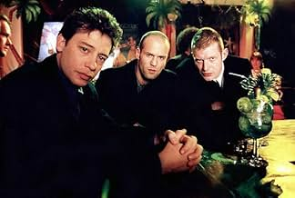
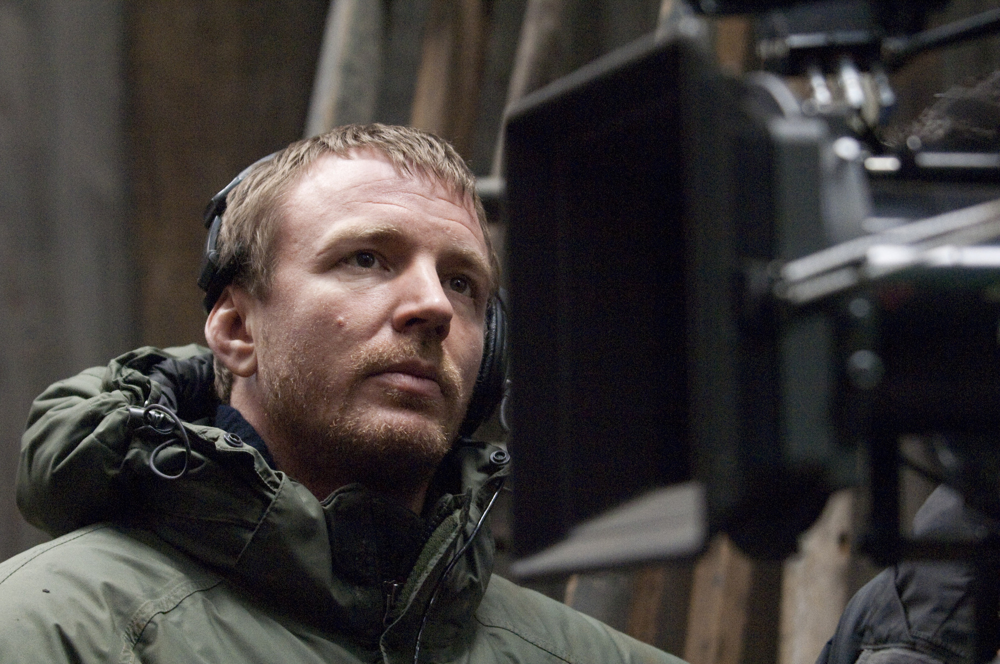

LOCK, STOCK AND TWO SMOKING BARRELS
Lock, Stock and Two Smoking Barrels is a 1998 British crime comedy film written and directed by Guy Ritchie. The movie follows four young men from London who get caught up in a dangerous game of debt, betrayal, and revenge after a high-stakes poker game goes horribly wrong. With its sharp dialogue, gritty humor, and stylish direction, the film became an instant cult classic.
Lock, Stock and Two Smoking Barrels is a gritty British crime comedy that blends sharp wit, chaotic storytelling, and unforgettable characters. It launched the careers of Jason Statham and Vinnie Jones and helped define the style of modern British gangster cinema.
 The story centers around Eddy (Nick Moran), a talented pool player who gets involved in a high-stakes game with local gangster Harry the Hat (Dexter Fletcher). When Eddy loses £500,000 in one night, he must find the money in just one week — or face deadly consequences. What follows is a chaotic chain of events involving crooked cops, rival gangs, and two antique shotguns that everyone seems to want.
Known for its fast-paced storytelling and unique character portrayals, the film launched the careers of actors such as Jason Statham, Vinnie Jones, and Ray Winstone. Its soundtrack, combining rock, reggae, and electronic music, further contributed to its edgy atmosphere.
 The film was praised for its originality, visual flair, and witty script. It grossed over $16 million worldwide on a budget of just $1.35 million, proving to be a huge success. Today, it's considered one of the most iconic British films of the 1990s and helped define the "Brit-crime" genre.
Main Cast
Nick Moran
Eddie
Jason Statham
Tommy
Vinnie Jones
Basketball
Dexter Fletcher
Harry the Hat